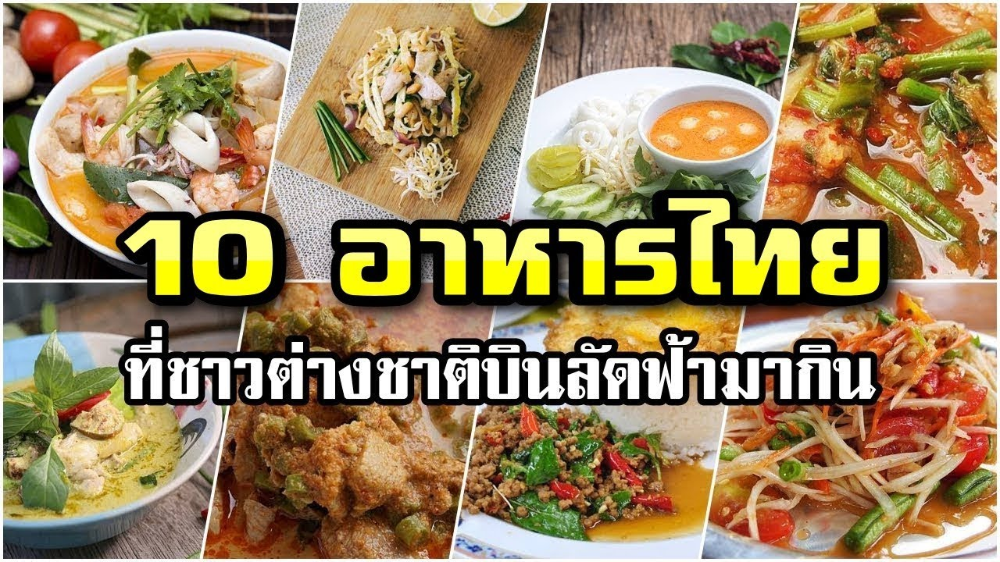
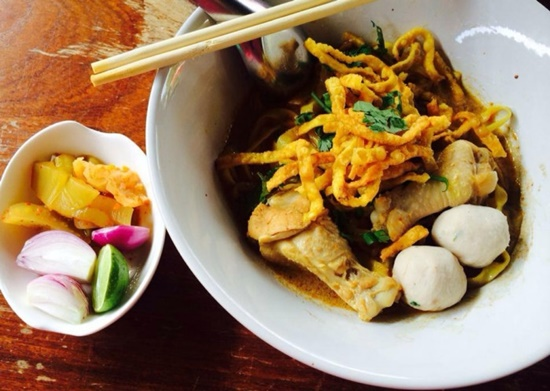

Thai Cuisine Explorer
- Home
- ประเภทอาหาร
- อาหารยอดนิยม
- ร้านอาหารแนะนำ
- สูตรอาหาร
โพสต์ล่าสุด
อาหารไทยที่คุณต้องลอง
โพสต์โดย ThaiFoodLover, Sep 1, 2024.
อาหารไทย แกงเขียวหวาน

อาหารไทยมีหลากหลายชนิด เช่น ต้มยำ ผัดไทย แกงเขียวหวาน และส้มตำ เป็นเพียงส่วนหนึ่งของอาหารรสเลิศมากมายที่ประกอบกันเป็นอาหารประจำชาติที่มีชีวิตชีวาแห่งนี้ ไม่ว่าคุณจะกำลังมองหาอาหารรสเผ็ดหรือหวาน - มีบางอย่างที่พิเศษเกี่ยวกับอาหารไทยยอดนิยมที่ทุกคนสามารถเพลิดเพลินได้! ด้วยความหลากหลายที่มีให้ตั้งแต่แผงขายข้างถนนไปจนถึงร้านอาหารหรู จึงไม่แปลกใจเลยว่าทำไมอาหารคลาสสิกเหล่านี้จึงยังคงเป็นที่ชื่นชอบของคนในท้องถิ่นและนักท่องเที่ยว
โพสต์แนะนำ
ทำไมต้องลองชิมข้าวซอย
โพสต์โดย ThaiFoodGuru, Aug 30, 2024.
ข้าวซอย

ข้าวซอยเป็นอาหารที่มีเอกลักษณ์ข้าวซอยเป็นอาหารพื้นเมืองของภาคเหนือของประเทศไทยที่มีรสชาติอร่อยและเป็นเอกลักษณ์ นี่คือเหตุผลที่คุณควรลองชิมข้าวซอย
แสดงความคิดเห็น:
2 ความคิดเห็น:
อิ่ม Sep 2, 2024, 9:12 PM
บทความน่าสนใจมาก! ชอบอาหารไทยมากๆ
แนน Sep 1, 2024, 8:25 PM
ชอบที่มีการแนะนำอาหารแบบละเอียด ขอบคุณครับ